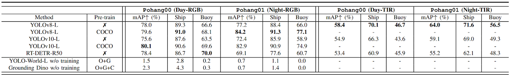
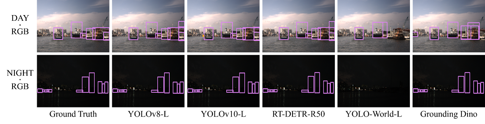
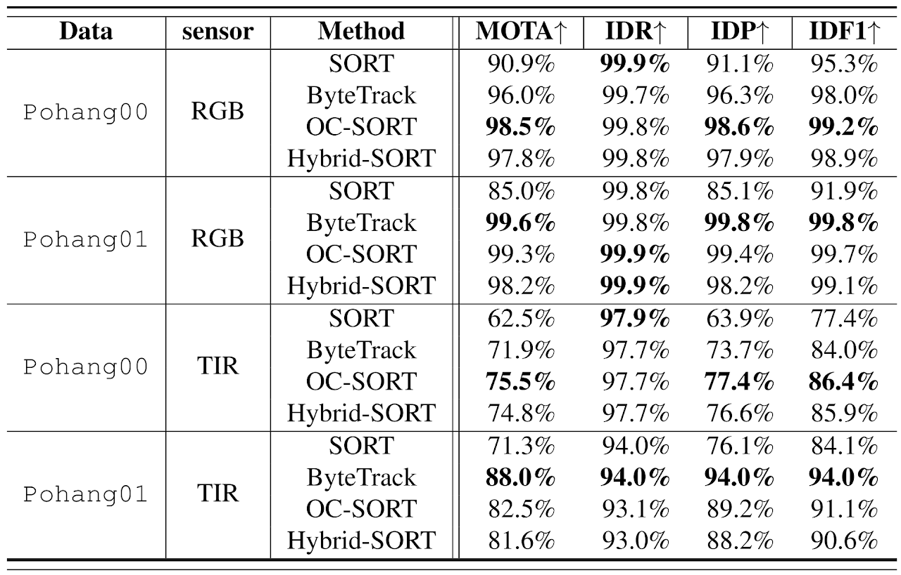

To demonstrate validity for object detection and tracking across various modalities and lighting conditions, we conducted tests in the Pohang00 sequence, which contains the highest number of multi-dynamic objects. For evaluation in low-light conditions and scenarios involving single-dynamic objects, we utilized the Pohang01 sequence. Several metrics were used to assess performance on sequences containing obstacles.
All models were trained using the AdamW optimizer (learning rate: 0.000714, momentum: 0.9) on an NVIDIA GeForce RTX 3090 GPU. From the Pohang00 (during the day) and Pohang01 (during the night) sequences, 2,158 and 2,399 images were sampled for training, and 959 and 1,066 images for validation, respectively.
We evaluated object detection models using state-of-the-art (SOTA) methods from both the You Only Look Once (YOLO) and Detection Transformer (DETR) series as closed-set models, alongside open-set models like YOLO-World and Grounding DINO to assess the generalization capabilities of our dataset. The models were evaluated using the mean Average Precision (mAP) metric to measure their performance.
$$\mathrm{Precision} = \frac{\mathrm{TP}}{\mathrm{TP} + \mathrm{FP}}, \quad \mathrm{Recall} = \frac{\mathrm{TP}}{\mathrm{TP} + \mathrm{FN}}$$
$$\mathrm{AP} = \int_{0}^{1} p(r)\,\mathrm{d}r$$


We evaluated the performance of the tracker on dynamic objects using
heuristic-based multi object tracking methods, including
SORT,
ByteTrack,
OC-SORT, and
Hybrid-SORT.
All tracker experiments used YOLOv8-L as the detection model, with the IoU threshold fixed at 0.3. To evaluate performance, we used the
MOTA and
IDF1 metrics to assess accuracy and ID matching.
$$\mathrm{MOTA} = 1 \;-\; \frac{|\mathrm{FN}| + |\mathrm{FP}| + |\mathrm{IDSW}|}{|\mathrm{gtDet}|}$$ $$\mathrm{IDP} = \frac{\mathrm{IDTP}}{\mathrm{IDTP} + \mathrm{IDFP}}, \quad \mathrm{IDR} = \frac{\mathrm{IDTP}}{\mathrm{IDTP} + \mathrm{IDFN}}, \quad \mathrm{IDF1} = \frac{2 \times \mathrm{IDTP}}{2 \times \mathrm{IDTP} + \mathrm{IDFP} + \mathrm{IDFN}}$$
